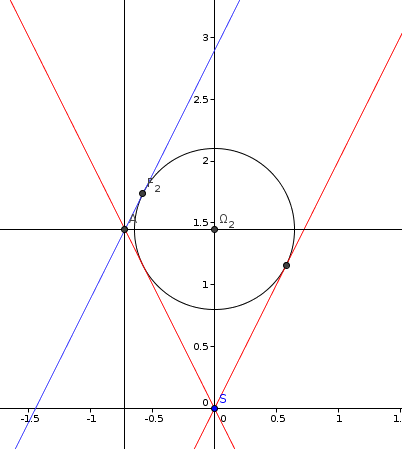

| Choisissez votre langue ! | Choose your language ! |
On considère le cône C d'équation x²+y²-k²z²=0 et le plan P d'équation z=px+q avec q≠0.
On suppose p=+1/k ou p=-1/k (cas de la parabole).
Au moyen d'un logiciel spécialisé (par exemple GeoGebra)faire un dessin représentant la coupe de la figure par le plan y=0.
En déduire les coordonnées du centre de la sphère de Dandelin.
Le rayon de la sphère de Dandelin.
Les coordonnées des points de contact de la sphère de Dandelin avec P.
aide

solution
Voir la figure donnée dans l'aide.
Dans ce cas on a p=1/k.Les calculs sont analogues à ceux des exercices 04 et 05.
Cependant dans ce cas le point Ω1 est rejeté à l'infini.
On trouve donc les coordonnées de Ω2 par substitution :
γ2=q/2
\( \displaystyle R_{2} = \frac{q}{2} \times \sqrt{\left( \frac{k}{1 + k} \right)} \)
etz2=(1/k)x2+q .
We consider the cone C with equation x²+y²-k²z²=0 and the plane P with equation z=px+q with q≠0.
We assume p=+1/k or p=-1/k (case of the parabola).
By means of specialized software (for example GeoGebra) make a drawing representing the section of the figure by the plane y=0.
Deduce the coordinates of the center of the Dandelin sphere.
The radius of the Dandelin sphere.
The coordinates of the contact points of the Dandelin sphere with P.
hint
solution
See the figure given in the help.
In this case we have p=1/k.The calculations are analogous to those of exercises 04 and 05.
However in this case the point Ω1 is rejected at infinity.
We therefore find the coordinates of Ω2 by substitution:
γ2=q/2
\( \displaystyle R_{2} = \frac{q}{2} \times \sqrt{\left( \frac{k}{1 + k} \right)} \)
andz2=(1/k)x2+q .
|
Création Gilles Dubois
Created by Gilles Dubois
|
Janvier 2022
January 2022
|
Version mobile Jquery
Mobile Jquery version
|
|